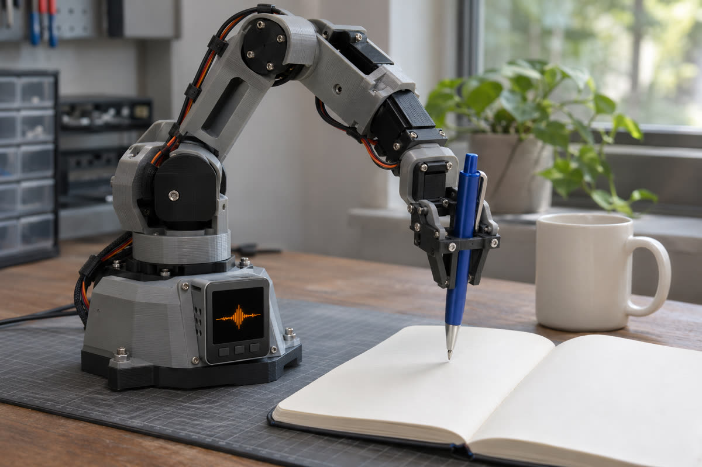

¿Y si tuviera un cuerpo?
La CoreS3 Lite puede ser la cabeza y el rostro de un robot que camina, gira o realiza tareas: escucha, habla, ve y muestra; la IA entiende y decide; el cuerpo se mueve y cuida su propia seguridad. Son ideas: nada de esto se ha construido. Las imágenes son ilustraciones.
Lista cerrada de comandos
La IA solo elige entre acciones conocidas, con un límite (caminar como máximo 50 cm por vez). El servidor descarta el resto. El habla nunca se convierte en código.
Freno en el cuerpo, no en la IA
La respuesta tarda unos 7 s. Quien se detiene antes de chocar es el sensor de distancia del propio kit, en milisegundos.
Energía del cuerpo
La batería de la placa es pequeña. La cabeza se alimenta de la batería del kit, por el USB-C.

1. Humanoide de taller
“Saluda a la visita.” La IA elige un gesto grabado (saludar, señalar, bailar) y habla al mismo tiempo. Ideal para clases y presentaciones.

2. Carrito que te sigue
“Ven conmigo.” La placa sigue tu rostro; la IA elige el rumbo mediante fotos; el carrito frena solo. Lo más fácil para empezar.

3. Perro robot
“Siéntate.” “Dame la pata.” El kit ya sabe caminar; la cabeza reconoce a su dueño y le da voz al personaje. El que más encanta a los niños.

4. Brazo que ayuda en la mesa
“Pásame el bolígrafo azul.” La IA encuentra el bolígrafo en la foto y el brazo lo agarra. La tarea física más útil y la más difícil: requiere calibrar la cámara y el brazo.

5. Cabeza que gira hacia quien habla
Dos servos: la placa encuentra el rostro y la base gira para mirarte. El primer paso más barato y seguro.

6. Jardinero de balcón
“Riega la albahaca.” La IA ve qué maceta está seca; el carrito va hasta ella y enciende la bomba durante unos segundos.
Orden sugerido: 5 → 2 → 3 o 1 → 4 o 6. Texto completo, con el dibujo de cada uno, en IDEIAS-CORPOS.md.